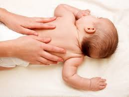
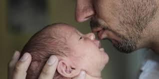
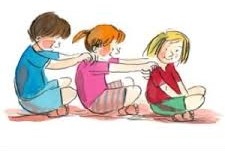

Bien naître et
Bien être
Virginie Perrault
Aide soignante et auxiliaire de puériculture au sein de l'hôpital public
-Ateliers massage bébé
-Ateliers portage en écharpes JPMBB
-Massage femmes enceintes
-Animation des groupes de paroles pour les papas
-Conseils en périnatalité
-Ateliers massage à l’école et à la crèche

Virginie Perrault
Je m’appelle Virginie, je suis âgée de 39 ans, je suis maman de deux enfants, et cela fait maintenant un peu plus de 15 ans que je travaille en tant qu’aide-soignante et auxiliaire de puériculture. Avec mon savoir, mes connaissances et ma bienveillance, j’aimerais accompagner les mamans à vivre leur maternité.
Mes Diplômes
Diplôme d'État d'Auxiliaire de Puériculture
Instructeur en Massage pour Bébé, International Association of Infant Massage
Massage Femme Enceinte selon Ayurvéda
Attestation Monitrice en Portage en Écharpe JPMBB
Prestations
Séances à domicile ou au 164 quinquies rue d’aguesseau, 92100 Boulogne-Billancourt
Atelier Massage Bébé
Atelier de 5 séances qui vous permettront de découvrir le massage complet de votre bébé et d'en apprécier les bienfaits.
Atelier Portage en Écharpes
Atelier d'apprentissage à l'utilisation d'écharpes de portage JPMBB durant les premières années de votre bébé.
Massage Femme Enceinte ayurvéda
Massage relaxant et apaisant qui vous soulagera durant la grossesse de toute les tensions au niveau du dos et améliorera la circulation sanguine et la digestion.
Conseils en Périnatalité

Auxiliaire de puériculture de formation, mes conseils en périnatalité sont un accompagnement des futurs parents visant à leur apporter de l’écoute, un soutien, des informations et une orientation.
1 heure • 40 €
Groupe de Parole Pour les Papas
Je propose des tables rondes pour les futurs papas. Ils auront la possibilité de poser des questions sur la grossesse, l’accouchement et l’arrivée de bébé. Tous les thèmes sont abordés.
1 heure • 40 €
Atelier Massage à l’École et à la Crèche
Le massage favorise un climat de partage et de respect. L'enfant apprendra à être à l'écoute de lui-même et des autres.